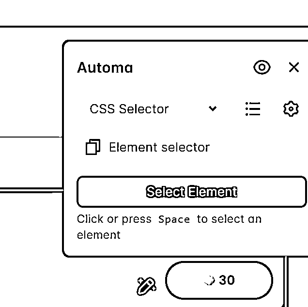
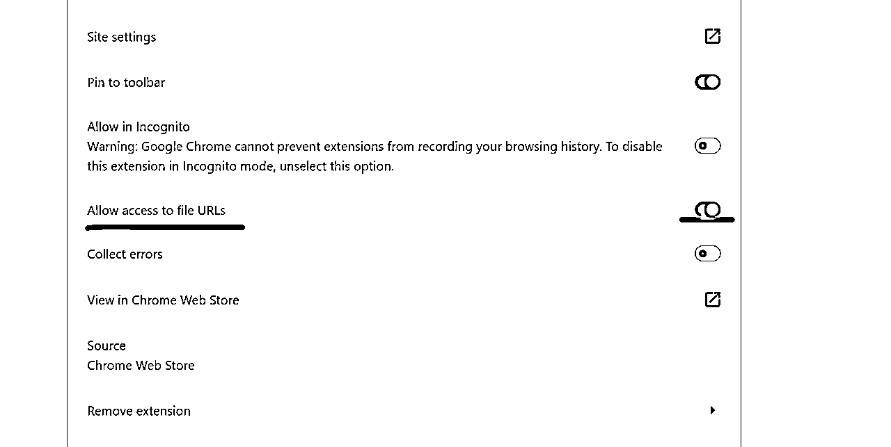
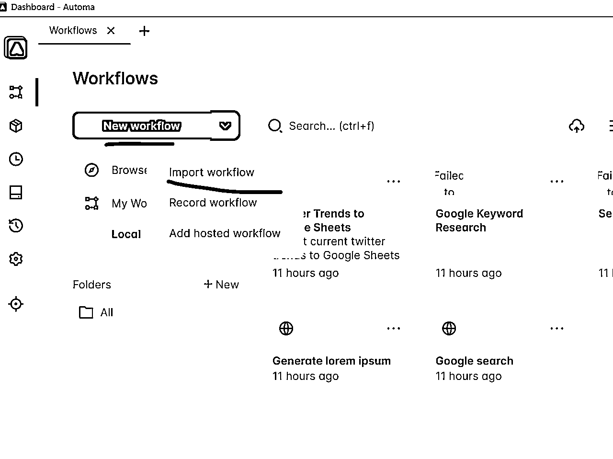
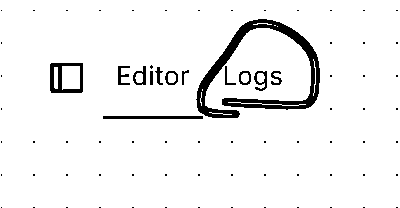
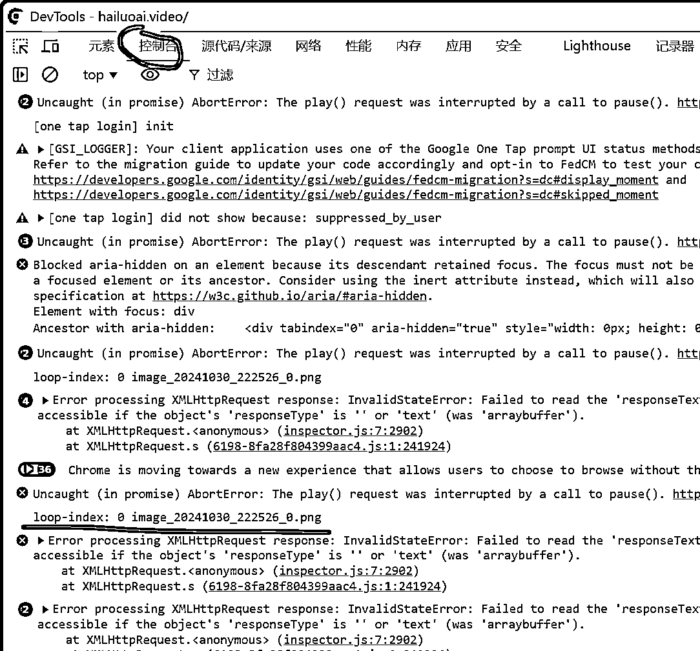
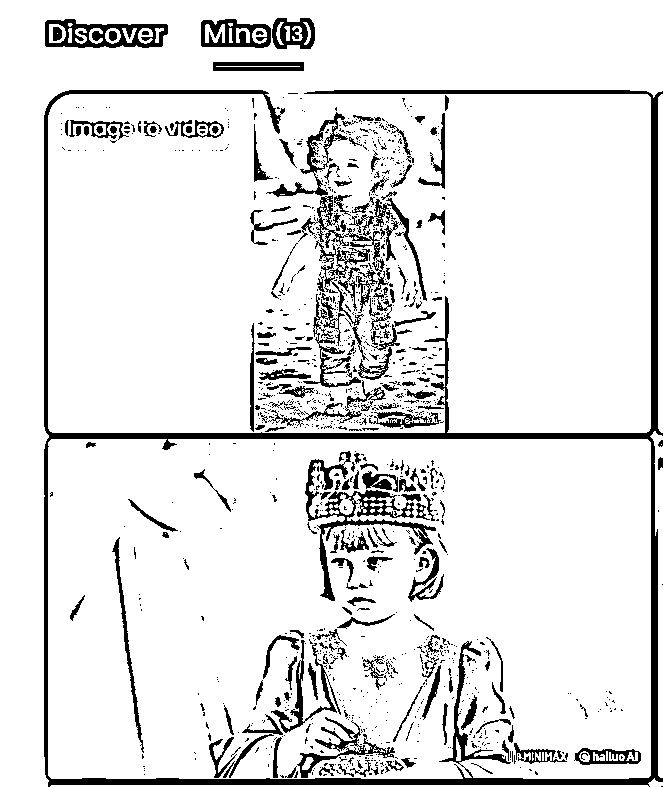

来源：https://ktnwm6ohjn.feishu.cn/docx/YsbXd93s1ogCixxUVWFcVujPnBe
大家好，我是土豆君，一个程序员。
自从亦仁老大发了一个AI视频的风向标后，大家都在尝试用各种工具生成视频。比如 Runaway、可灵AI、海螺AI等。
我在使用海螺AI的时候，发现生成视频的速度很慢，我想要自动化，所以就研究了几天并写了个RPA工作流。可以参考我的工作流去实现其他AI视频自动化的工作流。
如果你购买了海螺AI的会员或者有购买批量的邮箱账号（一个谷歌邮箱1-3元左右）用来注册海螺AI（国内版一天免费，国际版三天免费），那就可以使用这个工作流进行无限生成。
首先既然是RPA，大家肯定都熟悉影刀，对这个 Automa 都很陌生。其实我也是一样的，最开始我是在研究比特浏览器（一个指纹浏览器可以多开 https://www.bitbrowser.cn/）的时候，发现居然可以用RPA，我就稍微研究了下。
而这个RPA相比影刀好处在于只是个插件，可以用在任何一个浏览器当中，比如结合指纹浏览器就可以实现10个窗口自动化操作。用影刀当然是做不到的。
比特浏览器集成了这个 Automa 的开源扩展插件，使用这个插件就可以做到多个窗口自动化控制，而开源插件意味着工作流可以随便复制，当然缺点就是上手难度相比影刀比较大。
Automa 官网：https://www.automa.site/
如果你也想学习如何制作 Autom RPA 工作流，可以看下这个中文文档：https://automa.wiki 并且参考下各大视频网站的攻略，光靠文档上手会有点困难。
接下来先介绍一下我做的这个工作流的使用说明和设计思路吧。
工作流使用一个固定的提示词，上传一个目录下的图片（要用来跑视频的目录图片），循环上传到hailuo，如果有多个窗口比如使用比特浏览器，那么每个窗口都可以自动化，效率直接X10.
Automa 网页显示：
点击 ▶ 按钮就会运行，正在运行会在扩展显示一个 1️⃣ 的下标。
如果没有显示 1️⃣ 的下标，需要检查下日志是否运行出现了错误。查看日志的方法移步：Tips - 查看日志
然后看下工作流的运行效果吧：
这部分内容讲下工作流原理，只需要了解下如何使用的话可以跳过。
我们想要在海螺官网能实现自动化上传图片生成视频，最关键的是要能自动上传图片，而自动点击按钮就比较简单了。
上传图片，我这里用 Cursor 写了一个图片路径转化工具来解决这个问题，通过传入文件夹或图片会生成一个图片路径的列表。

生成内容是这样的json格式：
触发器开头，必要的。然后需要找到一个页面执行操作，这里使用切换页标签匹配要自动化的网址。
然后是循环数据，这个用来读取多个图片，按路径读取。执行完一个图片后又会从这里开始。
循环数据的结束是通过循环断点判断的。
这一段逻辑都是根据网页的UI判断是否有3个/5个视频正在生成，如果排满了就等待3分钟再次检测。
接下来是输入提示词、上传图片。
这里是上传图片后延迟5秒检测是否上传成功，检测到上传失败会重新点击上传一次。

最后点击上传按钮，并结合一些判断机制：判断上传是否成功、点击生成按钮是否开始生成。
以这个提示词为例讲解下这些元素大概的用法。
表单元素可以用来输入，CSS 选择器右边这个定位📍图标功能是选择一个网页元素，✔图标是验证这个网页元素的选择器是否生效。
选择元素可以自动框选，自动识别，可以使用 CSS 选择器 / Xpath 选择器。

之后在文本域填入要自动填写的提示词到相应位置。
文末有附件。解压缩，有两个文件，先打开：图片处理工具V1.0.exe

点击选择图片文件夹 或 把图片文件夹拖放进来
图片处理工具新做了一个网页版，可以直接使用这个：
https://imgtool.tudoujunha.parts/

注意不要把图片路径藏得太深，以免上传失败。可以把图片文件夹拷贝到磁盘根目录或者放在桌面。
然后点击生成图片列表，会在目录生成一个image_list_时间.json ，然后这个程序可以关闭了。

Chrome / Edge 浏览器可以访问这个链接添加
https://chromewebstore.google.com/detail/automa/infppggnoaenmfagbfknfkancpbljcca
如果访问不了Chrome Web Store 那直接用比特浏览器，扩展中心这里可以直接添加。
需要中文可以这里修改
使用 Chrome / Edge 浏览器不要忘记开启 Automa 插件的文件访问权限（比特浏览器我测试过会自动打开）。
复制下面这个链接到 Chrome / Edge 浏览器地址栏打开 Automa 插件配置
chrome://extensions/?id=infppggnoaenmfagbfknfkancpbljcca
或者在扩展管理中找到 Automa 插件方法：
开启权限：允许访问文件URLs

如果未开启权限会提示：Automa 无权访问文件

找到设置，修改语言。
打开后可以导入RPA工作流文件，这里导入：hailuo_auto.automa.json

工作流默认使用的是海螺国际版，如果你用的是国内版，需要看下面 Tips：切换国内/国际版 如何修改。
双击这个Forms 填写你要设置的固定提示词。
最新的工作流填写的是{{variables.prompt_text}}，如果你只需要使用固定一个提示词，那么直接删除填入自己的提示词就可以了。（这个变量是用来控制多提示词的情况，有兴趣可以看下 Tips - 使用多个提示词）
如果不需要填写提示词可以删除文字，或者把这个开关关闭，那么运行就会跳过这个功能。
导入之后点击工作流卡片，进入工作流界面，找到 Loop data 图片列表。双击卡片或点击右上角的✏图标：
之后左侧会显示 Loop Data 详情页，点击 Insert data :
点击 Import file, 选择 image_list.json:
导入之后是这个样子，点击右上角的❎图标
最后千万不要忘了点击 Save , 保存才会生效
先打开网页：https://hailuoai.com/video
点击▶图标就可以测试一下。
注意：
进入比特浏览器，进入流程设计，这里可以配置RPA自动化任务。点击会自动打开浏览器和Automa扩展，设计RPA工作流。
复制 Automa 工作流的 ID
在RPA自动化页面，新建RPA任务，输入工作流ID，就可以多个窗口自动运行。
如果自动运行的方式不方便修改工作流配置，那么开启多个窗口分别配置Automa扩展的工作流也是可以的，可以选择部分窗口或全部窗口使用 Automa。

这个延时默认是3分钟检测一次生成图片的按钮是否能点击（延时卡片的单位是毫秒millisecond），能点击就尝试上传图片点击。
点击日志，会显示当前工作流的日志，点击hailuo_auto 会显示运行的日志/错误。而日志的右边会显示运行的状态，正在运行中的情况也可以停止运行。

点击 Stop 可以停止运行的工作流

点击标题可以查看详细日志
国内版：https://hailuoai.com/video/create
国际版：https://hailuoai.video/create
切换国内/国际版需要把标签页对应的链接修改下。
以下的示例是国内版切换为国际版，并且是原来的链接，新的海螺官网链接需要/create
国内版 https://hailuoai.com/video/create 改为国际版：https://hailuoai.video/create
然后注意网页标签要切换到 Image to Video 后再运行工作流：
在海螺AI要运行RPA的页面，按F12可以打开开发者模式，找到控制台，可以查看输出的打印。
这些错误信息忽略就好，找到控制台最下面的打印日志：loop-index: 0 image_xxx_0.png
loop-index: 0 表示目前是第几张图片，从0开始计数。后面的图片的名称。

比如像下面这张生成的视频不是上传图片时的尺寸，就是属于文生视频。

出现这种情况的原因是图片上传失败。如果真遇到了图片上传失败变为文生视频的情况（应该概率比较低），可以尝试把工作流中这两个延迟5秒改为10秒试试。
目前工作流是固定一个提示词然后批量跑图。最新的工作流做了稍微修改，支持设置多个提示词，比如一个提示词跑前99张图，另一个提示词跑后面第100-299的图，有更多的图依此类推。
先找到这个 JavaScript，双击
点击这个代码块位置
把自己的多个提示词填入到相应的位置：第？个提示词，注意不要删除""引号。
automaSetVariable("prompt_text",
loopData.$index < 100 ? "第一个提示词" :
loopData.$index < 300 ? "第二个提示词" :
loopData.$index < 450 ? "第三个提示词" :
loopData.$index < 500 ? "第四个提示词" :
"超过500的提示词" // 当索引大于等于500时使用的默认值
)
这句代码意思是当前是跑的图片第0-第99张图，都使用第一个提示词。第100-第299张图，都使用第二个提示词。
依此类推，大于等于第500张图使用最后第五个提示词。
然后在找到这个填写prompt表单，把这个变量填入进去：{{variables.prompt_text}}
下载链接：https://gitee.com/tudoujunha/rpa-gpt/releases/download/v1.0/hailuo_auto.automa_v1.0.json
图片处理工具我做了一个网页版，可以优先使用这个，更方便：
imgtool.tudoujunha.parts
软件下载位置，只打包了 Windows 版本的 exe，如果需要 mac 版可以留言后面抽空更新一下。
Win版图片处理工具下载🔗
由于Mac不能直接打包软件，所以我贴下源码，可以直接运行或者自行打包下。
Mac版打包好了，可以试下
Mac版图片处理工具下载🔗
Python源码：

运行命令：
# 创建虚拟环境 python -m venv .venv # 激活虚拟环境 # Mac/Linux: source .venv/bin/activate # Windows: .venv\Scripts\activate # 然后安装依赖 pip install pillow # 运行脚本 python filepath2json.py # 打包命令 #### Windows pip install pyinstaller pyinstaller --onefile --windowed filepath2json.py #### MacOS pip install py2app py2applet --make-setup filepath2json.py python setup.py py2app
链接：https://gitee.com/tudoujunha/rpa-gpt/blob/master/filepath2json.py